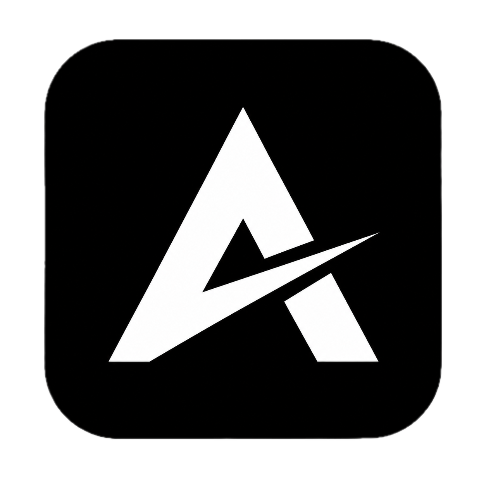

continuous-context.md Cited
hdk-docs · §KV spine
One shared llama_context; branches are seq_ids; bin-packed batched decode…
Monochrome mark + an electric-teal runtime accent. Teal is reserved for live / verified / local intelligence — not decoration. Greys carry structure; blue means sources & context; amber means data leaving the device; red means blocked or revoked.

A private AI workspace for research, reasoning, and source-backed work. Runs local agents on your device, uses reviewed AgentApps, and shows permissions while they are active.
Local, verified, active, safe. Live agent spine, runtime status, permission-active, primary action, focus.
Sources, research, context — web pages and retrieved documents in the ledger.
External / data leaving the device — a web-research permission that's active.
Blocked, revoked, unsafe — a denied tool call or a revoked permission.
Primary action + focus ring = teal (live intent). Destructive = red. Everything neutral stays graphite.
Local by default · nothing leaves your device
Mock only — colors are exploratory. The mark is the real logo.png asset. Agent-identity hues (badges/knots) stay multi-color so parallel agents read apart; teal is held for live/verified runtime state.